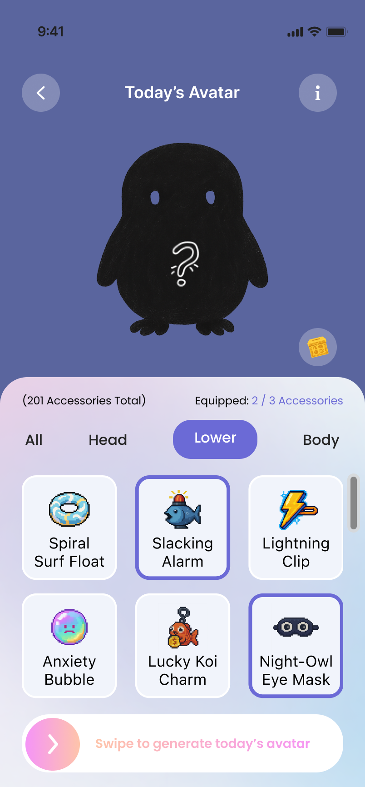
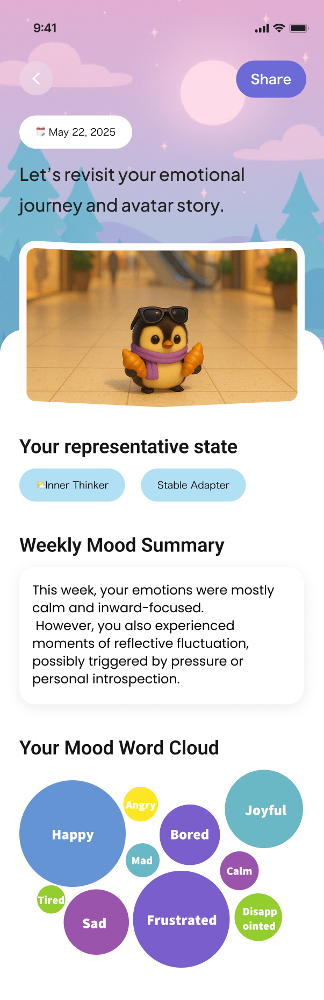

What is Unimo?
From Talking About Feelings to Interacting With Feelings
UNIMO is a Gen Z-focused emotional companion product that transforms emotional expression from text-heavy reflection into a lighter and more interactive experience. UNIMO helps users externalize emotions into collectible artifacts, emotional cards, and playful interaction loops that are easier to return to.

Emotional support is still being treated like conversation data.
At first, UNIMO was a familiar idea: an AI emotional companion where users could talk through how they felt.
Sounds promising, right? But we hit a problem fast.

People might open up once, but typing out feelings still felt like work, and many users did not have a strong reason to come back.
The deeper issue was that emotional support was still being treated like conversation data.
Most AI companion products are built to preserve context, but what users care about most is often not the full thread. It is the moment when they feel understood.

That created a clear mismatch: products were built to continue conversations, while users were looking for a way to hold onto meaning.
Emotional support is not only about receiving the right response.
A meaningful response can help in the moment, but its value often fades once the conversation moves on. People naturally want meaningful experiences to leave a trace. That is why they write journals, or revisit old messages to reconnect with how they felt, and see how they have changed over time.
That suggested a broader opportunity. Current AI companion products were missing two things:
- the feeling of emotional connection
- a way for meaningful emotional moments to leave a lasting trace
Users were already trying to preserve these moments on their own.
To better understand this behavior, I ran a two-week diary study with 12 frequent AI companion users.
Participants shared screenshots, saved messages, and short reflections whenever an AI interaction felt emotionally meaningful to them.
A clear pattern emerged:
- 10 of 12 users had screenshotted or copied a meaningful AI response
- Many said they wanted to revisit those moments later
- Some wanted to reflect on how their feelings changed over time
This mattered because it showed the need already existed.
I realized the goal was not simply to make the chat experience feel more empathetic
That shifted the product direction from:
Exploring the Right Format to Preserve Emotional Memory

Playful, visually expressive, and able to turn emotion into identity in a way that felt creative and fun.
Felt more like styling than emotional support, with a weaker connection to a specific meaningful interaction.

Made emotional patterns easier to see over time and supported reflection and self-awareness.
Felt too analytical, which made the experience less emotionally warm and more informational.
Simple, familiar, and low-friction, making meaningful exchanges easy to save and find later.
Improved retrieval, but did not change the emotional feel of the interaction, so it still felt like part of chat.
Created opportunities for resonance, relatability, and connection by making emotional experiences shareable.
Felt too public too early, before users had a strong enough sense of personal ownership over the interaction.

Created a more personal, distinct, and revisit-worthy format that gave the interaction stronger emotional value and ownership.
Required careful visual and language design to avoid feeling too system-generated or purely decorative.
Why cards is a better option
- Stronger ownership
- Clearer boundary
- More emotional weight
- Better revisit value
- More natural to collect and share
Shifting emotional support from conversation to something keepable
UNIMO takes an emotional exchange and turns it into a card with a short summary and a generated image.

How It Works
A User Scenario

3 Design Decisions That improve the user experience
1. Separate the card from the chat thread
It needed to feel structurally separate from the ongoing chat, not just visually highlighted inside it. By moving it out of the thread, the experience could begin to feel more intentional and distinct.


After an emotionally meaningful exchange, it will becomes a card and it moves into a dedicated collection.
2. Create anticipation through delay before the card reveal
A short delay already existed because the system needed time to generate the emotion card's visual and summary. Instead of hiding that delay, I treated it as part of the user experience. By allowing the moment to unfold more slowly, the transition could feel more intentional and emotionally meaningful.


I used a gentle loading transition before the card reveal. This gave the experience a stronger sense of anticipation, while also making the reveal feel more thoughtful and deliberate.
3. Use language that creates a sense of ownership
The emotional value did not come from the card alone, but also from how the product framed it. I avoided mechanical system copy like "Card generated" and used more personal language like "Your emotion has taken form" so the result felt more emotionally owned by the user.
Impact

83%
of users said the emotion card format felt significantly more personal than saving a standard chat screenshot.
"The design was not only preserving content, but changing how users valued the emotional moment itself."
The most important design choice was deciding what should remain
This project changed how I think about AI product design. Instead of only asking how the system should respond, I started asking what the interaction should leave behind, and that became the decision that shaped the entire direction of UNIMO.

a meaningful moment should not be treated like just another message.